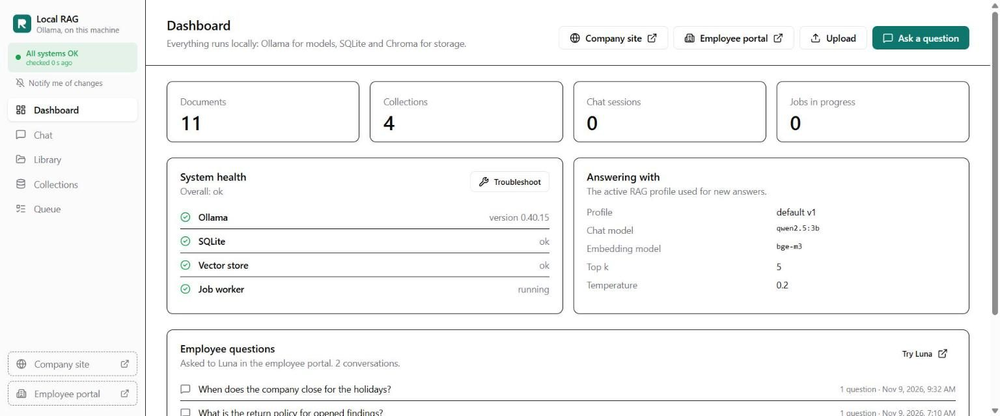
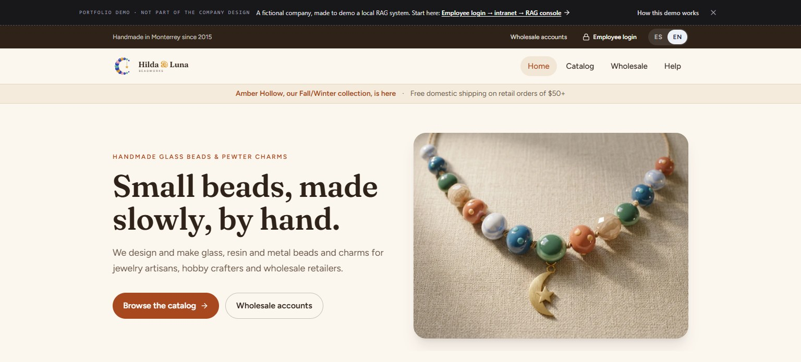
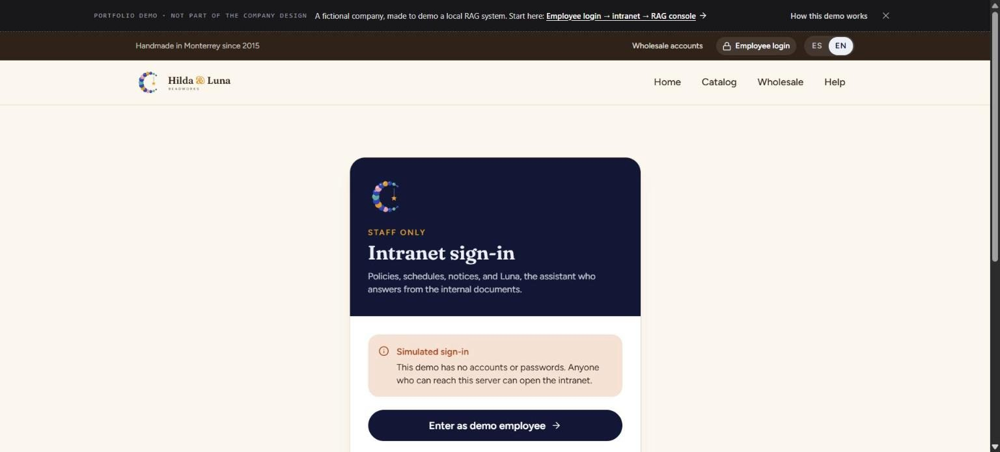
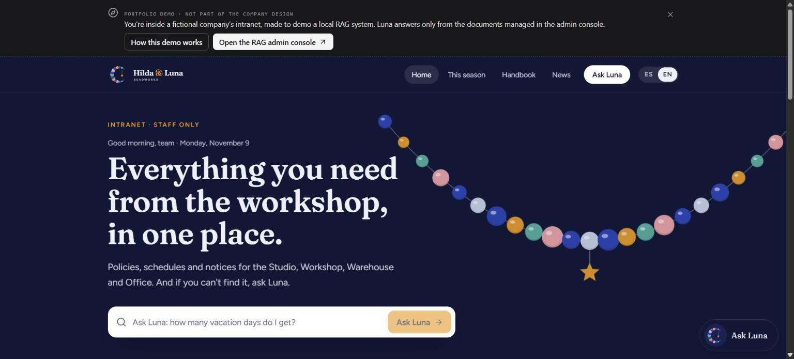
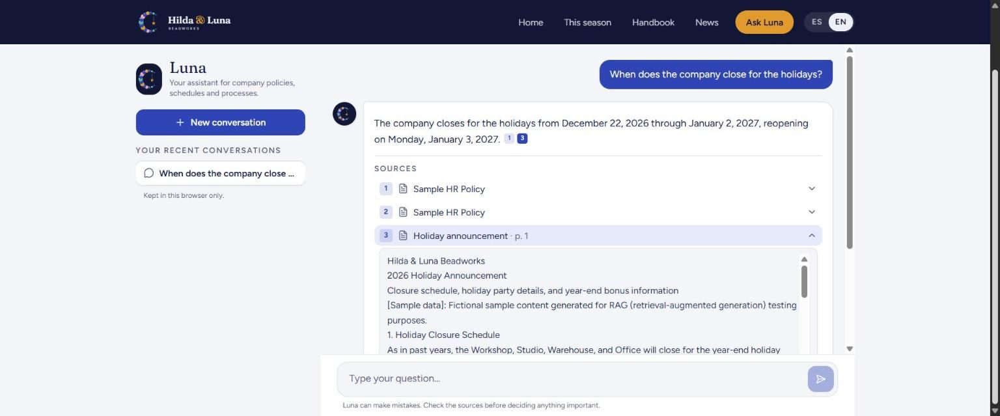
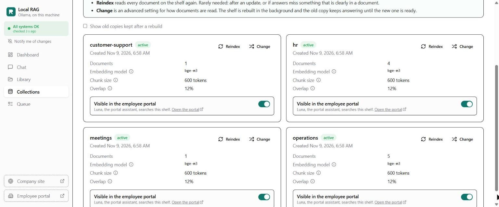
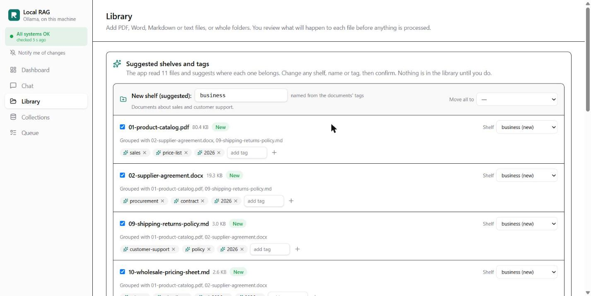

1What you need
| Memory | 8 GB of RAM at least; 16 GB is comfortable. On 8 GB, use the small chat model (qwen2.5:3b), with Ollama installed on the computer: running Ollama inside Docker needs about 16 GB, because Docker gets only part of the memory. |
|---|---|
| Disk | About 4 GB for the small models (qwen2.5:3b and bge-m3), or 7 GB with llama3.1. |
| Software | Docker Desktop, or Ollama and Python 3.11+. The start script in step 2 finds what you have and offers to install Ollama or Python if they're missing. Node 22 is only needed to build the web app yourself. |
No GPU is needed, and no internet connection after the models are downloaded.
git clone https://github.com/carlosgild-web/local-rag-ollama.git
cd local-rag-ollama2Start the app
The easy way: one command
.\start.cmd # Windows, in PowerShell or the Command Prompt (double-clicking it works too)
./start.sh # macOS and LinuxIt looks at your computer, then asks a few questions the first time:
- What you have: RAM (it suggests
qwen2.5:3bunder 12 GB), free disk, Ollama and Docker. - How to run it, with a recommended answer for each question (press Enter):
With C, the built web app is downloaded from the GitHub Release and checked against its SHA-256, so you don't need Node.You have It asks Yes (recommended) No Docker and Ollama Run the app in Docker? B: the app in a container, using your Ollama and models; nothing is downloaded twice C: with Python, no Docker Docker, no Ollama Run Ollama inside Docker? A: both in containers; nothing to install, but the models download into Docker (about 3 GB). Under 12 GB of RAM it warns that answers will be much slower, because Docker gets only part of the memory It offers to install Ollama, then B No Docker C: Python and Ollama; it offers to install either if missing - When something is installed but not running, it starts it for you: the Ollama app, or Docker Desktop. If that doesn't work, it tells you why and lets you wait/retry, choose another way, or quit. It never switches to another way without asking.
- Which chat model: it lists the ones your Ollama already has, and downloads only what's missing, after asking.
- It starts the app, waits until it's healthy, offers to load the demo company, opens the website, and ends by saying how it's running, for example "Running in Docker (route B)", with the container names.
It never installs anything without asking, and it shows the exact command first. If port 8000 is taken, it uses the next free one. Your answers are saved in .env, so the next run starts straight away, and each run is logged to data/start.log. stop stops the app (your documents and models are kept), status shows how it's running and its health, --check only explains what it would do, and --reconfigure asks again (switching ways stops the old one first; each way keeps its own library).
Or by hand (pick one way)
A. Docker, everything in containers
docker compose up -d
docker compose exec ollama ollama pull bge-m3
docker compose exec ollama ollama pull llama3.1On a machine with 8 GB of RAM, use the small chat model instead:
CHAT_MODEL=qwen2.5:3b docker compose up -d # PowerShell: $env:CHAT_MODEL="qwen2.5:3b"; docker compose up -d
docker compose exec ollama ollama pull bge-m3
docker compose exec ollama ollama pull qwen2.5:3bThe app image is pulled ready-made from GitHub's registry. Add --build to the first command to build it from the source instead.
Way A works even if Ollama is already installed on your computer: the container's Ollama isn't exposed on your machine's port 11434, so the two don't clash. It does download the models again, into Docker. To reuse the models you already have, use way B.
B. Docker, with the Ollama already on your computer
ollama pull bge-m3
ollama pull llama3.1 # or qwen2.5:3b, then start with CHAT_MODEL=qwen2.5:3b
docker compose -f compose.yaml -f compose.host-ollama.yaml up -dC. Without Docker
ollama pull bge-m3
ollama pull llama3.1
cd frontend && npm ci && npm run build # build the web app first
cd ../backend
python -m venv .venv
.venv/Scripts/pip install -r requirements.txt # macOS/Linux: .venv/bin/pip
.venv/Scripts/python -m uvicorn app.main:app --port 8000Settings are environment variables, such as CHAT_MODEL, OLLAMA_BASE_URL and DATA_DIR. See backend/.env.example.
3Check that it's running
Open http://localhost:8000 (the start script opens the website for you, and tells you if it used another port). The console's dashboard shows All systems OK once Ollama, the database, the search index and the background worker all answer.
If something is red, click Troubleshoot. It names the cause and the fix, for example "Ollama isn't running" or "the chat model isn't installed".

4Load the demo company
Hilda & Luna Beadworks is a fictional bead maker with 11 documents: a handbook, safety training, a catalog, a price sheet, an FAQ and more.
docker compose exec app python -m app.cli seed-demo # ways A and B
cd backend && .venv/Scripts/python -m app.cli seed-demo # way CThe start script offers to do this, and the dashboard shows a Load the demo company button while the library is empty. By hand, these commands create four shelves (customer-support, hr, meetings, operations) and end with 11 ingested, 0 skipped. Running it again skips every file as a duplicate.
5Take the tour
① The company's website: localhost:8000/site. The dark strip on top is the demo guide. It isn't part of the company's design; it shows reviewers the way.

② Employee login → Enter as demo employee. The sign-in is a simulation: no accounts, one button.

③ The intranet. Click How this demo works in the banner for the path and things to try.

④ Ask Luna something, like "When does the company close for the holidays?", and open a source to see the exact passage.
Switch to ES and ask in Spanish. Ask something the documents don't say, and Luna says so instead of guessing.

⑤ Open the RAG admin console from the banner. Under Collections, turn a shelf's Visible in the employee portal switch off, and Luna stops using it.

⑥ Try your own documents. In Library, drop a few files or a whole folder. The app suggests a shelf and tags for each one; you confirm, and they're indexed. Then ask about them in Chat.

The reviewer walkthrough goes through the same tour in more detail, and the slide deck explains the design.
6Run the tests
cd backend
.venv/Scripts/pip install -r requirements-dev.txt
.venv/Scripts/python -m pytest -q # 189 tests, with fakes: no Ollama needed
.venv/Scripts/ruff check . && .venv/Scripts/ruff format --check .
cd ../frontend && npm run build # type check and buildThe end-to-end test drives the running app with the real model: about 60 questions and every app mechanic. It takes 1–3 hours on a laptop CPU; see e2e/README.md. CI runs the unit tests, the linters, the frontend build and a Docker build on every push.
7If something goes wrong
| Problem | What to do |
|---|---|
| "Ollama isn't running" | Start Ollama (way B or C), or check docker compose ps (way A). The troubleshooter shows the address it's trying. |
| "Model not installed" | Run the ollama pull lines from step 2 for the models the app expects (CHAT_MODEL, EMBEDDING_MODEL). |
| Answers are slow | That's normal on a CPU: 20–60 seconds an answer. Use qwen2.5:3b on smaller machines. |
| Port 8000 is in use | The start script picks the next free port. By hand: set APP_PORT=8001 before docker compose up -d. |
| The start script chose the wrong way or model | Run it with --reconfigure, or delete .env. What happened is in data/start.log. |
| Start over with no documents | Ways A and B: docker compose down -v (deletes the app's data and the downloaded models). Way C: delete backend/data/. |
To stop the app, run .\start.cmd stop (or ./start.sh stop), or docker compose down if you started it by hand. Your documents and models are kept.
Security: there are no logins. Run the app on your own computer or a private network only. See SECURITY.md.